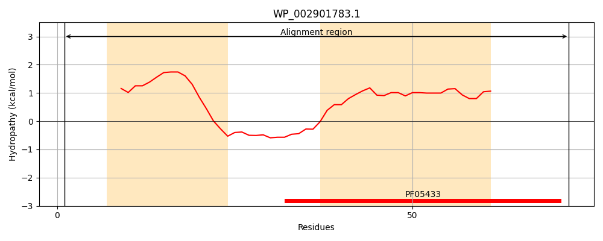
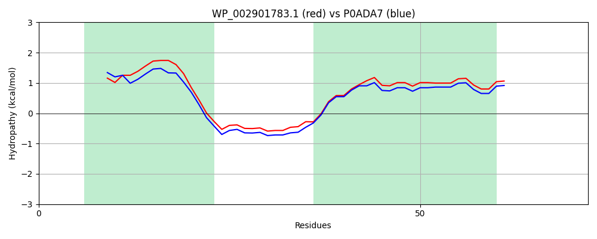

WP_002901783.1
Hit Accession: P0ADA7
Hit TCID: 9.B.186.1.5
Hit Description: gnl|BL_ORD_ID|8745 gnl|TC-DB|P0ADA7|9.B.186.1.5 Osmotically-inducible lipoprotein B OS=Escherichia coli (strain K12) OX=83333 GN=osmB PE=2 SV=1
Mach Len: 72
e:0.000000
Query TMS Count : 2
Hit TMS Count: 2
TMS-Overlap Score: 2.150000
Predicted Substrates:None
BLAST Alignment:
| Protein Hydropathy Plots: | |
|---|---|
|  |  |
Pairwise Alignment-Hydropathy Plot: | |
|  | |